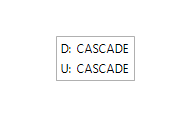
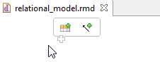
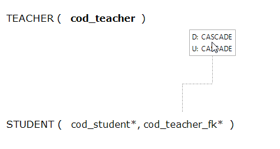
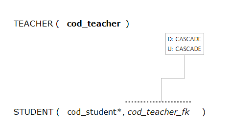
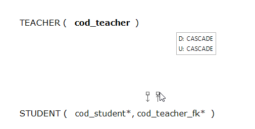
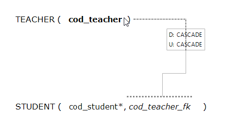
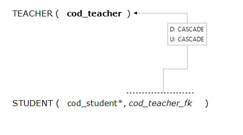
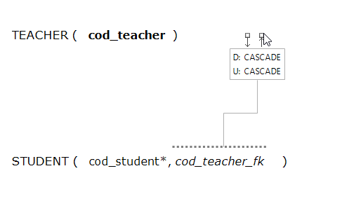

Set attribute as FK
To create a foreign key, we divide the process into two parts:
Create LinkFK
LinkFK is the object that will allow defining deleted and updated policies of the
foreign key reference.
To create a LinkFK we know that there are two ways,
the first being by clicking on the LinkFK Tool GMF tool palette.
Below, we click where you want to place the LinkFK.
After after select place, LinkFK will have been created correctly.

the second way is by placing the cursor on the diagram.
One dialog where we can see the LinkFK Tool appears.

Select it and the LinkFK appear in that position.
Establish references
Once created the Link we must establish references between different attributes and relation.
To do this, we have two tools:
AttributeIsFK
With this tool we define attributes refer to a relation with the object linkFK.
To do this we know that there are two ways,
the first being by clicking on the AttributeIsFK Tool GMF tool palette.
Click on the attribute you want to convert in FK and drag to the object LinkFK.

Finally, the reference has established.

The second way is to place the mouse over the attribute and select the arrow coming out of it.

Then drag as in the first mode to the link object FK.
ReferencedRelation
With this tool indicate relation to reference the object LinkFK.
To do this we know that there are two ways,
the first being by clicking on the Referred Relation Tool GMF tool palette.
Click on the LinkFK object and drag to the referred relation.

Finally, the reference has established.

The second way is to place the mouse over the LinkFK and select the arrow coming out of it.

Then drag as in the first mode to the relation.